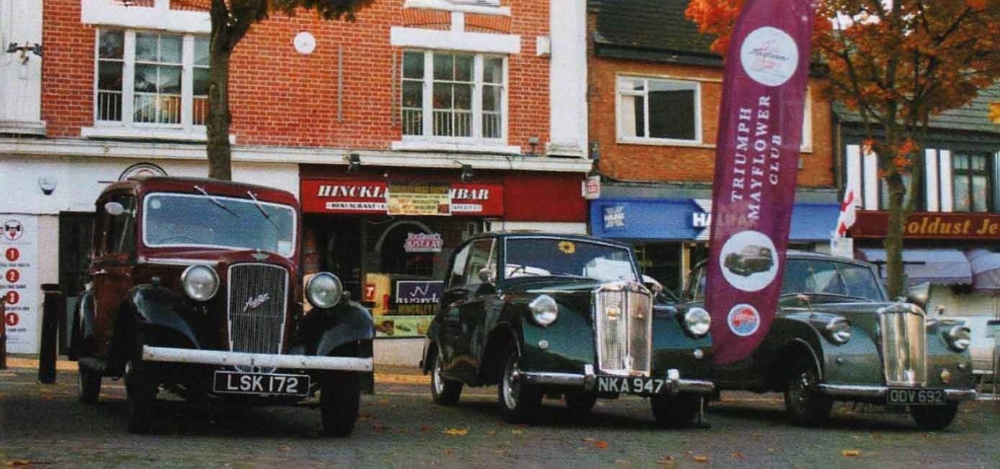
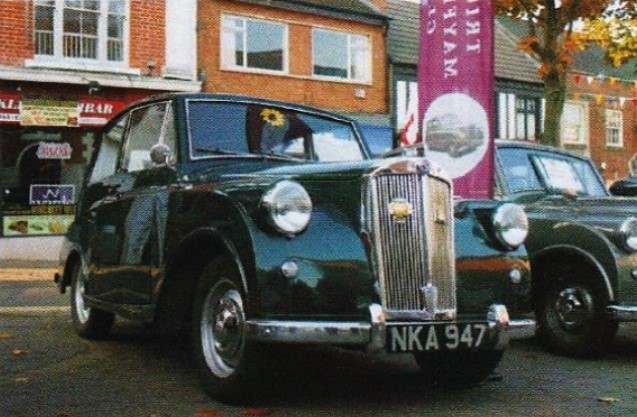
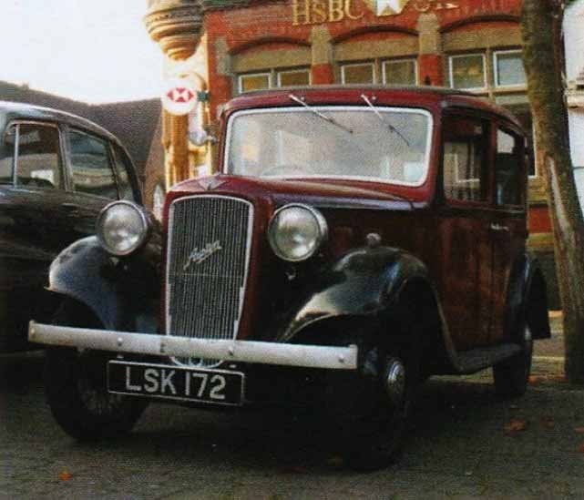

Hinckley Classic Motorshow
24th September 2017
Report by John Banks
It was the seventh annual Hinckley Classic Motorshow, so an early start, not due to distance, but because the aim was to gain a good spot in the town centre to showcase the Mayflower for maximum effect.
Chad Brown’s Mayflower, “Little Nell”, decided she was not well enough to attend, so another vehicle in the fleet was his Austin 10 Lichfield, which had a gentle run into town.
If the Mayflower had been ready, after major mechanical work, I am sure we could have joined-up with John and Paul to have a convoy of three Mayflowers into Hinckley, but sadly only two could be displayed together.
With precise timing, down to luck, we managed to arrive in the queue to park-up, right behind the two Mayflowers, so the Austin was manoeuvred next to them, to be an honorary Mayflower for the day. The weather was kind for September which resulted in over 600 vehicles attending, even a large steamroller! Radio Leicester were covering the event and were doing a car-based quiz about six different makes of car. The clues read: “George was the 15th Mormon president.”; “Where’s the caramel kept?”; “If they’re over 15 years old and worth more than £15,000 they could be here.”; “It brought the Puritans from Plymouth.”; “But this one’s from Coventry”. And the answer was: Mayflower! Great publicity for the Triumph Mayflower and, with John Castle’s vehicle (ODV 692) and Paul Burgess with his car (NKA 947) proudly on display, a great day was had by all.